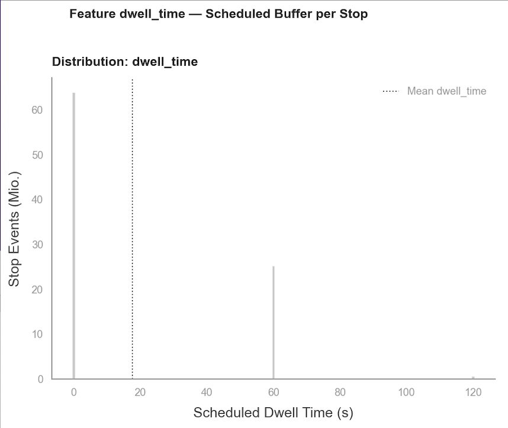
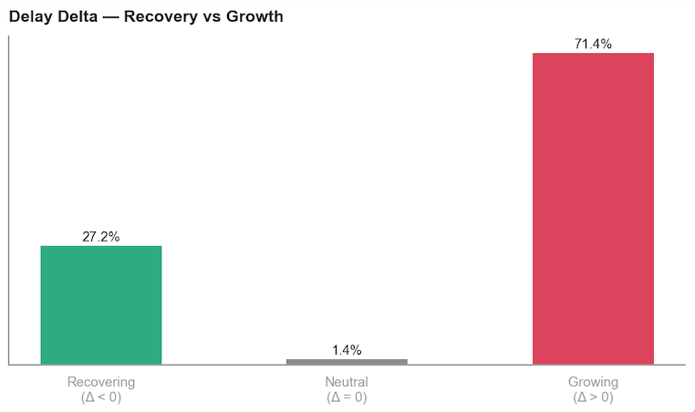
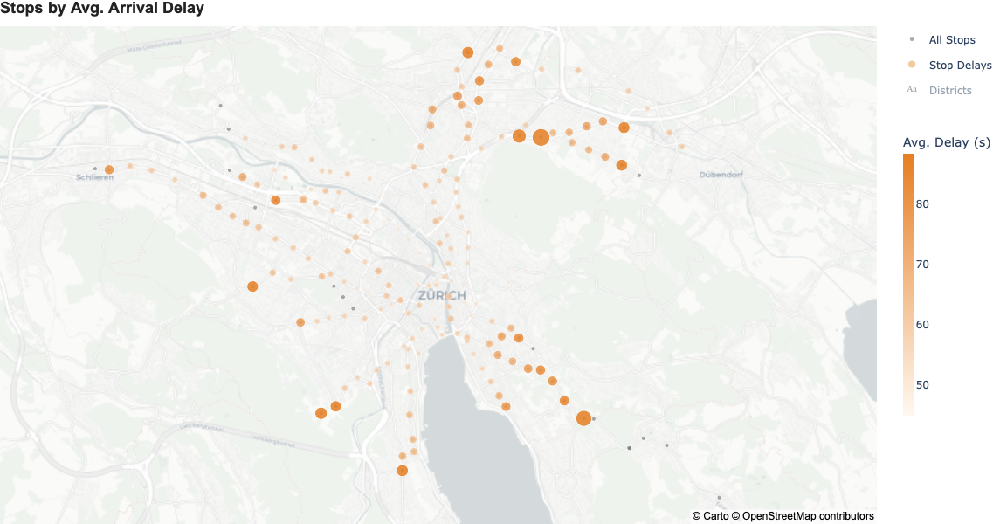
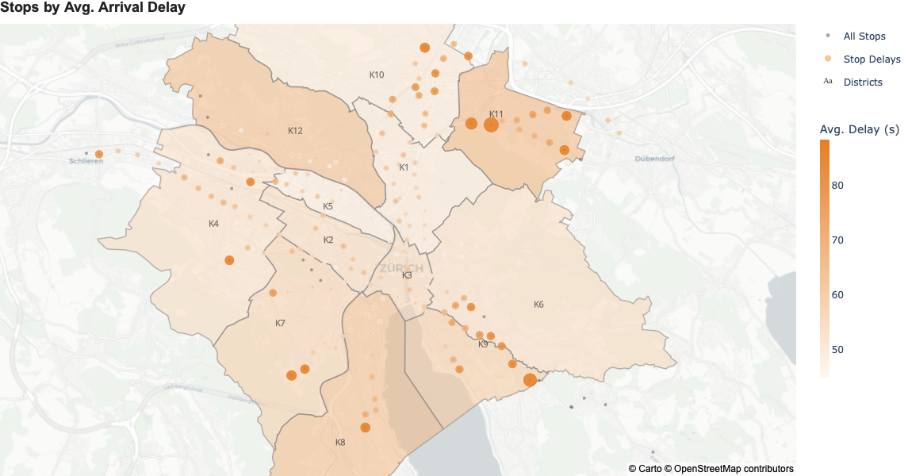
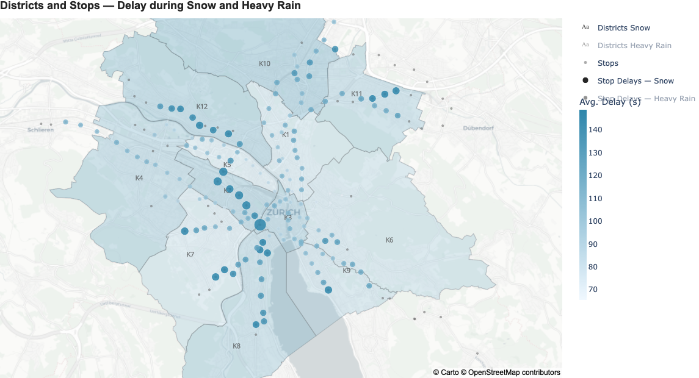
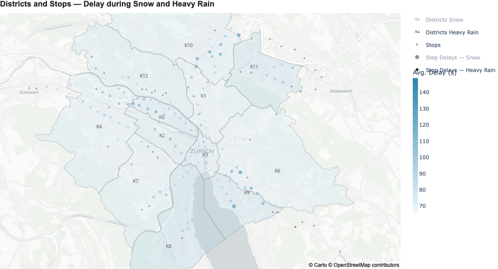
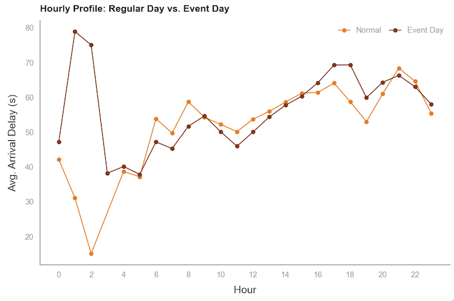
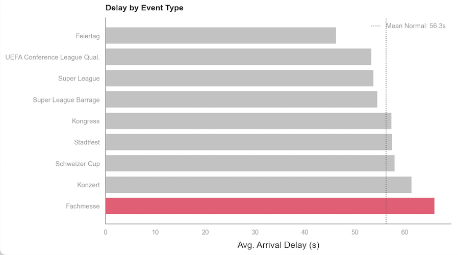
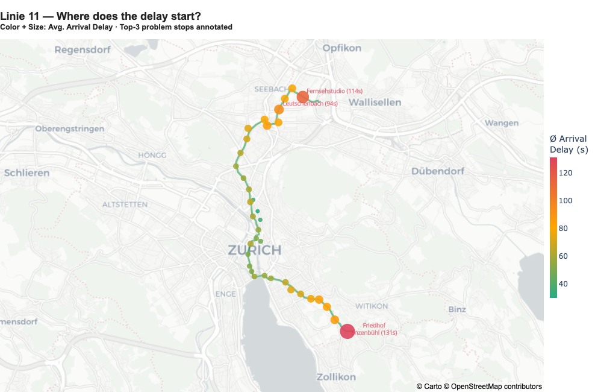
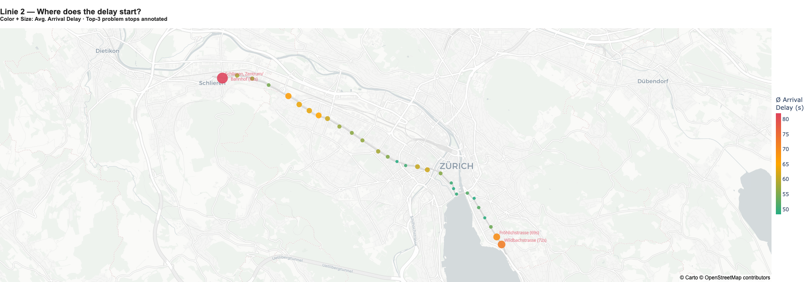

Warum Zürich, warum Trams?
3
Ebenen der Projektwahl
Relatability — Verspätungen sind gelebter Alltag. Kein Insider-Wissen nötig, um das Problem zu verstehen.
OGD
Open Gov Data
Datengrundsatz — VBZ publiziert granulare Echtzeitdaten. Gross genug für echtes ML, konkret genug für operative Empfehlungen.
↻
Vollständiger Zyklus
Gemeinwohl — Öffentlicher Verkehr ist ein Gemeingut. Bessere Fahrplanung dient der Gesellschaft, nicht privatem Profit.
Stack
Python · Polars · Pandas · LightGBM · Plotly · Streamlit · Jupyter · uv
Zeitraum & Umfang
- 2023–2025 — 3 Betriebsjahre
- 94,4 M Halt-Ereignisse
- 12 Notebooks · 66 Findings
- Full-Stack DANSC
4 heterogene Datenquellen
VBZ IST-Daten
Reale Ankunfts- und Abfahrtszeiten pro Trip × Stop
- Granularität: 50 M/Jahr · Format: 36 ZIP-Archive
- Key Discovery: Canceled Fahrten behalten — Extremfälle für das Modell
GTFS Fahrplan
Offizielle Fahrpläne, dwell_time, Haltestellen-Koordinaten
- Granularität: Yearly · Format: Parquet
- Key Discovery: dwell_time = 0s für 71,3 % aller Halte — Root Cause
Meteo Schweiz
Stündliche Wetterdaten (Temp, Niederschlag, Wind, Schnee)
- Granularität: Stündlich · Format: 3 Stationen
- Key Discovery: Schnee geografisch trennbar von Regen (Höhenlagen vs. Flusstäler)
Event-Kalender
Grossveranstaltungen, Feiertage — manuell kuriert
- Granularität: Per Date · Format: 258 Events
- Key Discovery: Fachmessen (66,0 s) schlagen Konzerte (75,4 s) in der Rangliste
Integration Pipeline
VBZ IST36 ZIP-Archive · 38 GB komprimiert · schweizweit → VBZ-Tram-Filter
GTFS Joindwell_time · stop_coords · stop_sequence — temporale Joins pro service_date
Delay Calcarrival_delay = actual_time − scheduled_time · trip_id rekonstruiert
Meteo JoinStündliche Werte · floor(timestamp, '1h') · Stadtkreis-Aggregation
Event Join258 Events · Gewichtung nach Kategorie + historischem Delay-Impact
Master94,4 M Zeilen · 26 Features · 541 MB Parquet · Temporal Split
Tool-Wahl: PolarsLazy Evaluation — 94 M Zeilen passen nicht in RAM. Polars scandelt statt zu laden.
Dauer: ~3 WochenInklusive Reprocessing nach trip_id-Bug — ohne diesen Nachtrag hätte das Modell nicht funktioniert.
Temporal Split2023–Jun 2024 Train · Jul–Dez 2024 Val · 2025 Test. Kein Shuffle — kein Data Leakage.
Was die Daten widerlegen
Die Innenstadt ist der Verspätungs-Hotspot
→
Central (48,3 s) und Paradeplatz (48,2 s) liegen unter Netzschnitt. Hotspots: Enzenbühl 93,8 s, Balgrist 85,2 s — ausschliesslich Peripherie.
Der Morgenrush ist das grösste Zeitproblem
→
7h liegt mit 48,9 s unter Netzschnitt. Echter Peak: 21h (67,9 s) — Abreisewellen nach Konzerten und Fussballspielen.
Schlechtes Wetter ist die Hauptursache
→
Schnee (+54 s) und Regen (+23,3 s) sind Verstärker. Grundniveau (56,3 s) bleibt auch bei optimalen Bedingungen konstant hoch.
Die Findings auf einen Blick
F1
Struktur: Kein Puffer eingebaut — 71,3 % dwell_time = 0s
F2
Geo: Hotspots an der Peripherie — 0 Overlap Top-Dichte × Top-Delay
F3
Zeit: Kein Morgenrush — Peak um 21h — +11,7 s um 21h vs. Netzschnitt
F4
Wetter: Schnee geografisch trennbar von Regen — Schnee +54s · Regen +23,3 s
F5
Events: Feiertage beste Tage, Fachmessen schlechteste Kategorie — Feiertage −9,9 s · Fachmessen 66,0 s
F6
Kaskade: Pearson r ≥ 0,85 auf allen 16 Linien — Pearson r ≥ 0,85 (alle 16 Linien)
Struktur: Kein Puffer eingebaut
71,3 % dwell_time = 0s
Kernzahl
71,5 % aller Halte akkumulieren Delay (delay_delta > 0) — weil 71,3 % der Haltestellen 0s dwell_time haben. Das Netz hat keinen Erholungsmechanismus eingebaut.

Dwell Time Distribution: 71,3% haben 0s Puffer

Delay Delta: 71,4% der Halte zeigen wachsende Verspätung
Quelle: 03_analysis_1-target.ipynb · 03_analysis_4-spatial.ipynb
Geo: Hotspots an der Peripherie
0 Overlap Top-Dichte × Top-Delay
Kernzahl
Die schlimmsten Haltestellen sind periphere Aussenkorridore — Friedhof Enzenbühl (93,8 s), Balgrist (85,2 s), Leutschenbach (82,7 s). Zentrale Knotenpunkte (Central, Paradeplatz) liegen unter Netzschnitt. 0 Overlap zwischen höchster Liniendichte und höchstem Delay.

Periphere Hotspots — durchschnittliche Verspätung pro Haltestelle

Distrikts-Perspektive: Strukturelles Muster der Peripherie-Nachteile
Quelle: 03_analysis_4-spatial.ipynb
Zeit: Kein Morgenrush — Peak um 21h
+11,7 s um 21h vs. Netzschnitt
Kernzahl
7h liegt mit 48,9 s unter dem Netzschnitt. Der echte Peak ist 21h (67,9 s) durch Events-Abreisewellen. Donnerstag ist der schlechteste Wochentag (60,4 s, P95=194s) — nicht Freitag. November jeweils Jahreshöchstwert.

Quelle: 03_analysis_3-temporal.ipynb
Wetter: Schnee geografisch trennbar von Regen
Schnee +54s · Regen +23,3 s
Kernzahl
Schnee ist der stärkste Einzeleffekt (+54s, OTP −10,9 %). Geografisch klar trennbar: Schnee trifft Höhenlagen (K10/K4/K12), Regen trifft Flusstäler (K5 / Limmat). Linien reagieren komplett unterschiedlich: L9 Schnee +75,9 s vs. Regen +10,0 s — L17 umgekehrt.

Schnee-Effekt: +54s in Höhenlagen (K10, K4, K12)

Regen-Effekt: +23,3s in Flusstälern (K5 Limmat-Region)
Quelle: 03_analysis_5-meteo.ipynb
Events: Feiertage beste Tage, Fachmessen schlechteste Kategorie
Feiertage −9,9 s · Fachmessen 66,0 s
Kernzahl
Feiertage sind mit 46,3 s (−9,9 s vs. Normal) der beste Tagestyp — der MIV-Rückgang überwiegt jeden Event-Effekt. Event-Wirkung ist ein Abend-Phänomen (18–22h): tagsüber kein messbarer Unterschied. Fachmessen (66,0 s) schlagen Taylor Swift (75,4 s) in der Rangliste.

Event-Effekt ist Abend-only (18–22h), nicht tagsüber

Event-Kategorien: Fachmesse (65s) schlägt Taylor Swift (75s)
Quelle: 03_analysis_6-events.ipynb
Kaskade: Pearson r ≥ 0,85 auf allen 16 Linien
Pearson r ≥ 0,85 (alle 16 Linien)
Kernzahl
Der Delay an einem Halt überträgt sich mit r ≥ 0.85 auf den nächsten Halt desselben Trips — auf allen 16 Linien. Das ist kein statistisches Artefakt, sondern ein lernbares Signal: prev_trip_delay ist in LightGBM v2 das stärkste neue Feature und erklärt den Sprung von 45,7 s auf 18,56 s MAE.

Allgemeine Linienkarte: Delay-Gradient von Start (rot) zu Ende (grün)

L2 Detail: Periphere Start mit hohem Delay, zentrale Endhaltestelle besser
Quelle: 03_analysis_4-spatial.ipynb · 06_prediction_4-model_v2.ipynb
LightGBM v1 → v2: Das richtige Signal
Baseline
Stop Mean
50,0 s
- Predict ⌀ by stop — bester naiver Ansatz
- Kein Zeitkontext, kein Wetter, kein Event
Referenzpunkt für alle Modell-Verbesserungen
LightGBM v1
34 Features
45,7 s
- Zeit · Wetter · Events · Linie · Stop
- MBE +8,3 s — systematisch zu optimistisch
−4,3 s vs. Baseline — solide, aber kein Durchbruch
LightGBM v2
36 Features
18,56 s
- + prev_trip_delay (Kaskadenindikator)
- + stop_sequence_pct · Isotonic-Kalibrierung
- MBE −0,69 s — nahezu bias-frei
−31,4 s vs. Baseline · −63 % · Signal aus der Analyse
Der Sprung kam nicht durch einen besseren Algorithmus, sondern durch das richtige Signal:
prev_trip_delay — der Kaskadenindikator aus der Analyse. Das Modell bestätigt die These.
4 Hebel — jeder direkt durch Daten gedeckt
R1
Fahrplan-Redesign L11 — gezielter Puffer einbauen
71,3 % aller Haltestellen haben 0s dwell_time — kein Erholungsmechanismus. L11 (68,7 s, OTP 82 %) und ihre Endstationen zeigen die stärkste Akkumulation. Selbst +10s Puffer an 3–5 kritischen Koppelste…
R2
Real-Time Dispatch — Kaskadenmodell operativ nutzen
LightGBM v2 mit prev_trip_delay erreicht MAE 18,56 s (−63 % vs. Baseline). Das Signal ist echtzeit-verfügbar (Vorgänger-Halt als Input). Dispatchsystem könnte automatisch Taktlücken schließen bevor de…
R3
Kapazitätsmanagement 20–22h — Event-Abreisewelle abfedern
Peak ist 21h (+11,7 s vs. Netzschnitt) durch Abreisewellen. Donnerstag + Freitag mit Grossevents ist die kritischste Kombination. Takterhöhung 20–22h auf L11/L8 (beide dauerhaft erhöhtes Grundniveau) …
R4
OTP-Monitoring nach Stadtkreis — K11/K12 als Priority Zones
Kreis 11 (68,3 s, OTP 83 %) und Kreis 12 (66,3 s) sind strukturell benachteiligt. Automatisiertes Alert-System auf Haltestellenebene — kombiniert mit dem Prediction-Modell als Frühwarnsignal — ermögli…
Zurich Tram Flow
Verspätungen im Zürcher Tramnetz sind vorhersagbar — weil sie strukturell sind.
Was vorhersagbar ist, ist steuerbar.
94,4 M
Halt-Ereignisse
18,56 s
MAE LightGBM v2
−63 %
vs. Baseline
4
Empfehlungen